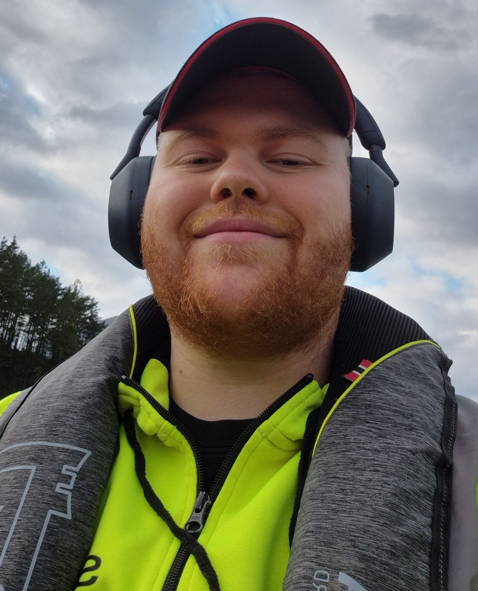

Kristian Golin Strøm sin portefølje

About me
Mitt navn er Kristian Golin Strøm, jobber som elektriker og bor i Sandnes.
Jeg har alltid hatt en stor interesse for datamaskiner og min første stasjonære var selvbygd.
Etterhvert har dette utviklet seg til en interesse for programmering og
dypere forståelse av hvordan datasystemer fungerer.
Ut fra dette startet jeg med å lære meg python, og senere HTML og CSS.
Dette vil jeg bygge videre på med JavaScript for å komplettere nettsider med mer funksjonalitet.
My projects:

Jeg startet prosessen med å lære med Python da jeg gikk Elektrofag på videregående. Da lærte vi det enkleste rundt printing, input, og løkker. Jeg ble hektet med en gang, og satt i timesvis på fritiden for å lage egne små prosjekter, som en kalkulator. Mestringsfølelsen var stor og det var her gleden over programmering startet. I årene etter videregående har jeg av og på brukt tid på å lære meg mer, men kunnskapen er fortsatt på et ganske simpelt nivå, med forståelse av struktur og enkle syntakser.
Min første stasjonære datamaskin var selvbygd da jeg var ung, med hjelp av mitt voksne søskenbarn. Etter dette har jeg flere ganger kjøpt nye deler og byttet ut, formatert disker, lastet ned Windows, osv. Likt som med Python, var dette noe vi også lærte på videregående. Da klassekameratene mine slet med å bygge 1 funksjonell PC, hadde jeg bygget 3 stykker.

I slutten av 2024 fikk jeg lysten til å lage en app for en ide jeg hadde hatt et par år. Jeg startet med å lage nettside med ChatGPT, noe som virkelig ga tenning. Dermed startet jeg prosessen med å lære meg HTML og CSS gjennom W3schools. Dette ga en ekstrem mestringsfølelse og fra her visste jeg at dette var noe jeg ønsket å jobbe med.